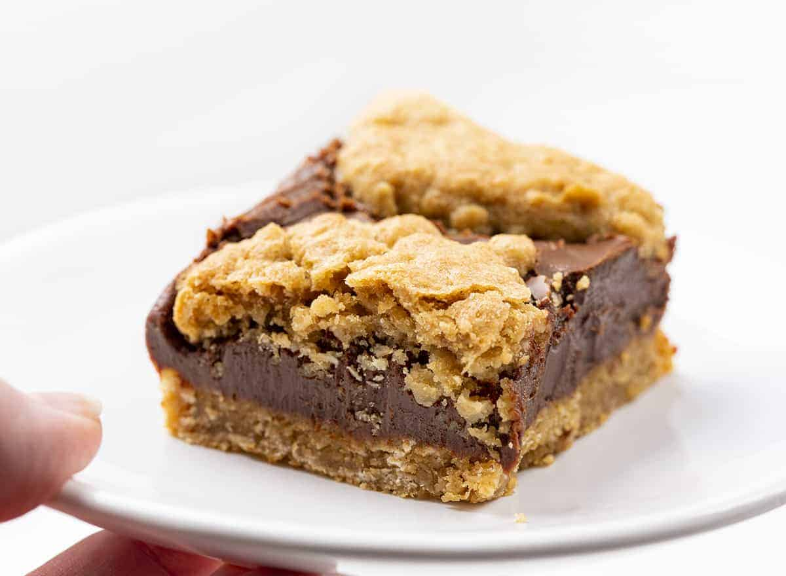

The Best Revel Bars

These revel bars are a decadent dessert that is easy to make in bulk. This recipe is always a hit at home and is a
unique way to use up a lot of old-fashioned or instant oatmeal and leftover chocolate. Although semi-sweet and dark
chocolate is recommended, milk chocolate can also work well if you have a sweet tooth.
Ingredients
For the oat bar portion:
- 3 cups old-fashioned/instant oats
- 2 cups flour
- 1 tsp baking soda
- 1/2 tsp salt
- 2 cups light brown sugar
- 1 cup unsalted, room temperature butter
- 2 large eggs, room temperature
- 1 tsp vanilla extract
For the chocolate fudge
- 14oz sweetened condensed milk
- 2 cups semi-sweet chocolate chips
- 1/2 cup unsalted, melted butter
- 1/4 tsp salt
- 1 tsp vanilla extract
Steps
For the oat bar portion:
- Preheat oven to 350 degrees Fahrenheit and line a 9x13 inch baking pan with baking paper.
- Combine the dry ingredients for the oat bar in a large bowl (excep the sugar).
- Cream together the butter and sugar until incorporated. Then add and mix in the eggs and vanilla until smooth.
- Combine the dry and wet ingredients until fully combined.
- Line the bottom of the baking pan with 2/3 of the mixture.
- Bake the mixture for 5 min in the oven then take out to cool.
For the fudge:
- In a saucepan over medium heat, melt and combine the condensed milk, chocolate, butter, and salt until smooth.
- Remove form heat and mix in vanilla.
Assembly:
- Pour all of the fudge mixture onto the baked oat bars.
- Use the remaining oat mixture to create dots over the fudge mixture. Take portions of the mixture,
flatten them, and place over the fudge.
- Bake for 25-30 min or until golden brown. Wait until cool before placing in the frudge to chill for 3 hours (at least).